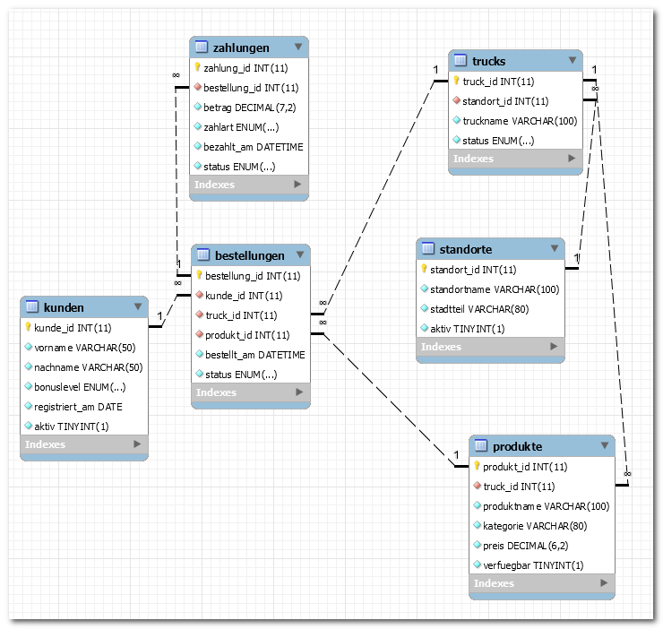

titel: "Klassenarbeit BG12 2025/2026: EERM und SQL (60 Min) – VERSION3" klasse: "BG12" schuljahr: "2025-2026" fach: "Informatik und Wirtschaftsinformatik" bearbeitungszeit: "60 Minuten" erreichbare_punkte: 34 verteilung: modellierung_normalisierung_anomalien: 14 abfragen_mehrtabellen: 14 theorie_mc: 3 struktogramm: 3 artefakte: modellierung_eerm_lehrkraft: "startupwerkstatt_2025.mwb" sql_db_dump: "foodtrucknetz_struktur_2025.sql" sql_db_daten: "foodtrucknetz_daten_2025.sql" sql_db_eerm: "foodtrucknetz_2025.mwb" sql_db_eerm_grafik: "foodtrucknetz_2025.png" fassung: aufgaben
Klassenarbeit (60 Minuten) – VERSION3
Klasse/Kurs: BG12 | Schuljahr: 2025/2026 | Bearbeitungszeit: 60 Minuten | Erreichbare Punkte: 34
Struktur
| Teil | Inhalte | Punkte | Zeit |
|---|---|---|---|
| A | Theorie (MC) | 3 | 5 Min |
| B | EERM, Normalisierung, Anomalien | 14 | 25 Min |
| C | SQL-Abfragen über mehrere Tabellen | 14 | 25 Min |
| D | Grundlagen Programmierung (Struktogramm) | 3 | 5 Min |
| Gesamt | 34 | 60 Min |
Teil A (3 Punkte)
Aufgabe 1: Theorie (Multiple Choice) – 3 Punkte
Markieren Sie richtig/falsch. (0,5 Punkte je Aussage)
| Nr. | Aussage | r/f |
|---|---|---|
| 1 | Eine Zwischentabelle kann eine N:M-Beziehung auflösen. | |
| 2 | Der Primärschlüssel darf mehrfach vorkommen. | |
| 3 | COUNT(DISTINCT ...) zählt unterschiedliche Werte. |
|
| 4 | 3NF reduziert Änderungsanomalien. | |
| 5 | LEFT JOLEFT JOIN`tensätze ohne Treffer rechts zeigen. |
|
| 6 | HAVINHAVINGvor dem ``GROUP BY |
Teil B (14 Punkte): EERM in MySQL Workbench
Wichtig: Teil B ist eine reine Modellierungsaufgabe. Es wird bewusst kein fertiges SQL-Schema vorgegeben.
Aufgabe 3.1: EERM modellieren – 8 Punkte
Sachverhalt Modellierung (Kontext 1):
Eine schulnahe Startup-Werkstatt begleitet Teams von der Idee bis zum Prototyp. Teams pitchen bei Mentorinnen und Mentoren, buchen Beratungsfenster und dokumentieren Meilensteine. Für die Leitung sind Auswertungen zu Teamfortschritt und Mentoreneinsatz wichtig.
Auftrag: Leiten Sie aus dem Sachverhalt ein geeignetes EERM in MySQL Workbench ab. Begründen Sie Ihre Modellierungsentscheidungen kurz.
Aufgabe 3.2: Normalisierung bis 3NF – 4 Punkte
- Benennen Sie 2 funktionale Abhängigkeiten.
- Begründen Sie, warum das Modell in 3NF liegt.
Aufgabe 3.3: Anomalien – 2 Punkte
Nennen Sie je ein Beispiel: - Einfügeanomalie - Änderungsanomalie - Löschanomalie
Teil C (14 Punkte): SQL-Abfragen über mehrere Tabellen
Separater SQL-Kontext (3NF, Kontext 2) – anderen Kontext als Modellierung: Für Teil C wird absichtlich ein anderen Kontext verwendet als in Teil B (Kontext 1), damit die Modellierungslösung aus Teil B nicht indirekt vorgegeben wird.
Konkreter Sachverhalt: Ein Foodtruck-Netzwerk verwaltet Kundinnen und Kunden, Trucks, Standorte, Produkte, Bestellungen und Zahlungen (6 Entitätstypen).
Arbeitsgrundlage:
- SQL-Strukturfoodtrucknetz_struktur_2025.sqll- SQL-Daten:foodtrucknetz_datfoodtrucknetz_daten_2025.sqlafik: foodtrucknetz_2025.png

Aufgabe 4.1 (4 Punkte)
Geben Sie für jede abgeschlossene Bestellung den Kundennamen, Trucknamen, Standort und Zahlbetrag aus. Sortierung: Nachname, Bestellzeit.
Aufgabe 4.2 (4 Punkte)
Ermitteln Sie je Kundin/Kunde die Anzahl abgeschlossener Bestellungen. Zeigen Sie nur Personen mit mindestens 2 Bestellungen.
Aufgabe 4.3 (3 Punkte)
Geben Sie pro Standort den letzten Bestellzeitpunkt und die Anzahl unterschiedlicher Kundinnen/Kunden aus.
Aufgabe 4.4 (3 Punkte)
Finden Sie Produkte ohne Bestellung (LEFT JOIN).
Teil D (3 Punkte): Grundlagen Programmierung
Aufgabe: Struktogramm – FoodtruckNetz Tagesumsatz
Ein Foodtruck-Betreiber möchte seinen Tagesumsatz berechnen. Erstellen Sie ein Struktogramm (gemäß Operatorenliste für Struktogramme) für folgende Verarbeitung:
- Eingabe: Anzahl verkaufter Menüs und Preis pro Menü in Euro
- Verarbeitung: Berechnung des Tagesumsatzes
- Ausgabe: Tagesumsatz in Euro
Hinweis: Verwenden Sie ausschließlich Sequenz-Blöcke (EVA-Prinzip). Kontrollstrukturen (Schleifen, Verzweigungen) werden nicht bewertet und sind nicht erforderlich.
| Bewertungskriterium | Punkte |
|---|---|
| Struktogramm-Rahmen (ANFANG/ENDE) und 3 Sequenzblöcke vollständig | 1,0 |
| Berechnungsformel korrekt (Zuweisung mit :=) | 1,5 |
| Variablennamen und Lesbarkeit | 0,5 |
| Gesamt | 3,0 |
Abgabe
- EERM-Modellierung Teil B (von Schülern erstellt): als
.mwb-Datei abgeben - SQL-Lösungen Teil C: al
.mwbi oder Text